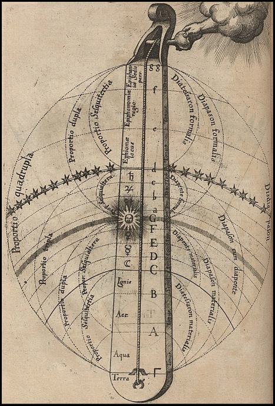
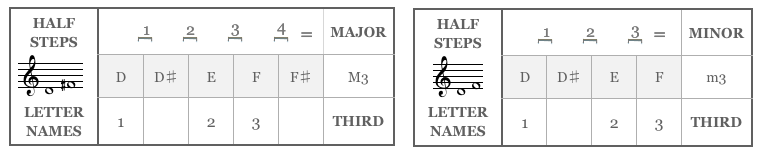
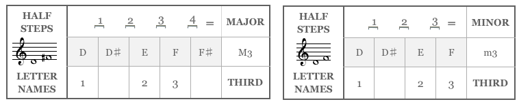
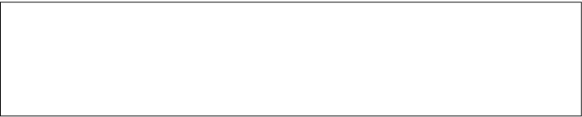
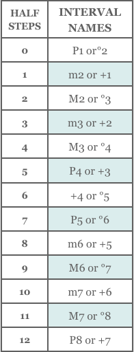
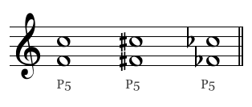
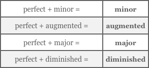
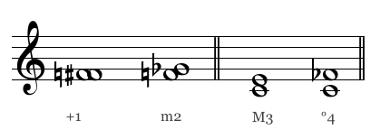
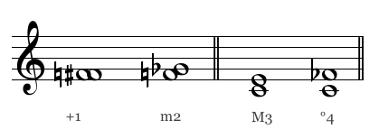
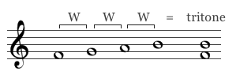

-

Chapter 5
Intervals
The difference in pitch between two notes is referred to as an interval. If the two notes are played at the same time the interval is a harmonic interval, and if they are played one after the other the proper term is melodic interval.
“The Mundane Monochord with its Proportions and Intervals,” from De Musica Mundana (Robert Fludd, 1574-1637).
Various philosophers since Pythagorus have related the intervals of music to the structure of the cosmos. -
58
Section 1
Naming Intervals
Intervals are named according to the number of scale notes they include. That’s equivalent to saying that they are named for the number of staff lines and spaces they include, or the number of letter names.
For instance, the interval from C to G covers five
lines and spaces or five letters, counting its starting and ending notes: C (D, E, F) G, so it’s called a fifth. Similarly, D to F is a third: D, (E), F. D to F♯ is also
a third, but a different kind. E to F covers only two letters, so it’s a second. C to the same C is a type of unison, since it includes only one letter, and so is
C to C♯ or C to C♭.Movie 5.1 shows the basic intervals in harmonic form.
Major And Minor Intervals
Each type of interval can have different qualities, which are determined by counting half steps. The quality of seconds, thirds, sixths, and sevenths can be major Major A term used to describe the quality of an interval, scale
or chord.
Seconds, thirds, sixths and sevenths can be either major
or minor. The major form of the interval is one half step larger than its minor form.
In a scale, if the third formed between the first note and the third note of a scale contains 4 half steps, the scale is major. If the third contains three half steps, the scale is minor.
Likewise, if the bottom third of a triad contains
4 half steps, the chord is major. or minor Minor A term used to describe the quality of an interval, scale
or chord.
Seconds, thirds, sixths and sevenths can be either major
or minor. The minor form of the interval is one half step smaller than its major form.
In a scale, if the third formed between the first note and the third note of a scale contains 3 half steps, the scale is minor. If the third contains four half steps, the scale is major.
Likewise, if the bottom third of a triad is minor
(contains 3 half steps) the chord is minor. . A major third, such as C-E, includes four half steps and is a half step larger than a minor third like D-F, which has only three half steps.Movie 5.2 Major and minor intervals
A major interval is one half step larger than the minor interval
of the same name.Movie 5.1 Naming intervals
Intervals are named according to the number of scale notes they include.
-
59
Be careful — when counting half steps, we are not counting the notes, but rather the spaces between them.
Perfect Intervals
Unisons, fifths, fourths, and octaves cannot be called major or minor; they have one basic quality, which is perfect Perfect The term used to describe a unison, octave, fifth or fourth that is neither augmented (larger by a half step) or diminished (smaller by a half step). . A perfect fifth, for example, has seven half steps; a perfect fourth has five half steps.
 
Figure 5.1 Counting letter names and half steps to determine interval and quality.
Movie 5.3 Perfect intervals
-
60
Augmented And Diminished Intervals
If a major or perfect interval is enlarged by one half step, it’s augmented Augmented A term used to describe an interval or a chord that has the following qualities:
• An augmented interval is enlarged one half step beyond major or perfect.
• An augmented triad is built by stacking two major thirds, which produces an augmented fifth between its outer notes. . If a minor or perfect interval is reduced one half step,
it’s diminished Diminished A term used to describe an interval or a chord with the following qualities:
• A diminished interval is one half step smaller than minor or perfect.
• A diminished triad is built by stacking two minor thirds which produces a diminished fifth between its outer notes. .For example, F to A♯ is a third (it includes three letter names) but it has five half steps, one half step larger than major, so it’s an augmented third. B to F (going upward) is spelled as a fifth, B (C, D, E,) F, but it has only six half steps, so it’s a diminished fifth.
D rising to F♭ is a third that is one half step smaller than minor, so it’s a diminished third.Augmented and diminished intervals are identified with the signs “+” and “°.”
Movie 5.4 Augmenting and diminishing the perfect and major/minor intervals
Suggested Practica Musica Activities 5.1
• Interval Types: Practice recognizing intervals (quality provided).
• Comparing Interval Qualities: Compare interval qualities between intervals of the same name.
• Identify Perfect Intervals: Distinguish between perfect fourths, fifths and octaves.
-
61
Review 5.1
1. The combination of any two pitches forms an interval. If the notes are played at the same time
we call it a harmonic interval, otherwise it’s a
melodic interval.2. Intervals are named according to the number of letter names they include. C to G, C to G♯, and
C to G♭, for instance, cover five letters, C, D, E, F, G, so they are all fifths of some kind. Other intervals
are the unison, second, third, fourth, sixth, seventh, and octave.3. Seconds, thirds, sixths, and sevenths have two basic qualities called major and minor. The minor form
of each interval is a half step smaller than the major form. C-E is a major third; C-E♭ is a minor third.4. Unisons, octaves, fifths and fourths have one
basic quality called perfect. C-G is a perfect fifth.5. If an interval is a half step larger than major or perfect, it’s augmented. If it’s a half step smaller than minor or perfect, it’s diminished. C♯-E♭ is
a diminished third and C-E♯ is an augmented
third. C-G♯ is an augmented fifth; C-G♭ is a diminished fifth. -
62
Section 2
Identifying Intervals
To identify an interval you must do two things: first get the numeric name of the interval by counting the number of letter names it covers, and then count the half steps in it to determine its quality. This chart of the most common intervals will help (Figure 5.2). Notice that two possible answers are given for each size in half steps. An augmented
second and a minor third, for example, both have three half steps.You may find it helpful at first to look
at or imagine the piano keyboard when identifying an interval. Movie 5.5 shows how to distinguish between two intervals that both have eight half steps – one is a type of fifth and the other a type of sixth.Movie 5.5 Counting half steps and
letter names on the keyboard to identify
an interval.The intervals C to G sharp and C to A flat each contain 8 half steps but have different names. C to G sharp covers five letter names and is
a type of fifth, whereas C to A flat is a type
of sixth.Figure 5.2 Interval Chart
For each number of half steps, there are at least two possible interval names.
-
63
Beyond Augmented And Diminished
In theory, intervals can even be doubly or triply augmented or diminished but you won’t often see such oddities. If you did encounter an interval such as A♭ rising to D♯, however, you could analyze it this way: it includes four letter names (A, B, C, D), so it’s a fourth, and it has seven half steps, which is one greater than an augmented fourth. Therefore it’s a doubly-augmented fourth.
Identifying Intervals Quickly
One aid to interval identification is to memorize the qualities of the “natural intervals,” which are the intervals as they appear in
the C major scale, with no sharps or flats. Then you can use them as standards with which to compare intervals that do have sharps
or flats.For example, all natural fifths or fourths on the staff are perfect, except those between B and F. So if you see a non-natural fifth like C-G♯ you remember that the natural fifth C-G is perfect, and since this one’s upper note is raised a half step it must be one half step larger than perfect. So C-G♯ is an augmented fifth. Similarly, all natural thirds are either major or minor.
It’s very important to memorize the qualities of the natural thirds and fifths. When you see B ascending to D you will know instantly that B-D is a minor third, containing three half steps. So if you encounter instead a B♭-D you’ll know that since the B is now lowered a half step the interval has gotten larger than its natural version and therefore it must be a major third.
Movie 5.6 Learn the qualities of the natural thirds, fourths and fifths to help you quickly identify any third, fourth or fifth.
-
64
Even simpler is the case of an interval that is just like a natural one, except that both of its notes have been raised or lowered by the same amount. This, of course, has no effect on the name of the interval, which remains the same in both numeric size and quality (Figure 5.3).
Knowing the qualities of the natural thirds and the natural fifths/fourths will also help you to quickly determine the qualities of other intervals.
For example, a sixth can be regarded as a perfect fourth added to a third (note that this isn’t quite like arithmetic – in musical intervals 4 + 3 equals 6!). Adding a perfect interval never changes the quality of the result, so if the sixth looks like a minor third plus a perfect fourth, then the sixth itself must be minor too. Similarly, a seventh could be seen as a third added to a perfect fifth. So a major third on top of a perfect fifth must add up to a major seventh.
Figure 5.3 Identical modifiers leave the quality unchanged.
Figure 5.4 The quality of an interval, when added to a perfect interval, remains unchanged.

Movie 5.7 Interval arithmetic


Suggested Practica Musica Activities 5.2

• Hearing Intervals: Practice recognizing intervals
by ear.• Interval Playing: Practice finding intervals on the
keyboard (enharmonics provided). -
65
Inverting Intervals
If you reverse the notes of an interval you obtain its inversion Inversion The rearrangement of the notes of an interval or chord. The interval C-E,
for example, is the inversion of E-C; e.g. a third inverted becomes a sixth.
A chord is inverted if any note other than its root is in the bass.
Melodic inversion is a transformation technique used by composers to develop a melodic idea. Inversion changes the direction of each interval in the melody. A rising third becomes
a descending third, for instance.
A tonal inversion, which is most common, never leaves the original key and, as a result, some intervals are a half step larger or smaller than the original. A real inversion maintains the exact intervals and soon leaves the original key. .
For example, C rising to E is a major third; its inversion is E rising
to C, a minor sixth. Knowing the principle of inversion is handy for quick recognition, because inversion reverses an interval’s quality.
Major intervals become minor upon inversion; diminished intervals become augmented. Perfect intervals, however, remain perfect.
As for the number of the interval, it’s always 9 minus the old number:
a sixth, for example, will invert to a third (9 minus 6 equals 3).So if you see the note C with a B above it, you can use the inversion principle to quickly identify the interval as a major seventh: if the
B were below the C it would be a minor second away (that’s easier
to count out than a seventh), and a minor second inverts to a major seventh (minor inverts to major; 9 minus 2 equals 7).So far we have been looking at intervals within a single octave. These are known as simple intervals Simple Intervals An interval spanning an octave or less. Intervals greater than an octave are compound intervals. . If you add an octave to an interval its quality is unchanged. Such intervals are known as compound intervals Compound Intervals An interval plus an octave. Adding an octave to a simple interval leaves its quality unchanged. There are names for many compound intervals less than two octaves: a second plus an octave can be called a ninth, a third plus an octave a tenth, a fourth plus an octave an eleventh, then come the twelfth and the thirteenth. After the thirteenth we usually name the interval by its simple form. . There are names for many compound intervals less
than two octaves: a second plus an octave can be called
a ninth, a third plus an octave a tenth, a fourth plus an octave an eleventh, then come the twelfth and the thirteenth. After the thirteenth we usually name the interval by its simple form.Movie 5.8 Inverting a major, minor, augmented
or diminished interval reverses the interval’s
quality.Movie 5.9 Compound intervals. Adding an octave to an
interval has no effect on the interval’s quality. -
66
More About Enharmonic Equivalents
You can easily make a mistake in identifying or writing intervals if you don’t distinguish between notes that are enharmonic equivalents such as F♯ and G♭ or E and F♭
(see Chapter 1).A second, the difference between any two adjacent scale steps, will always be spelled with two adjacent letter names. F to G♭ is a second, as are F to G and F to G♯. However, F to F♯ is not a second but a kind of unison, since it involves only one letter name — even though the F♯ is played on the same piano key
as the G♭.What matters for naming an interval is not how it sounds,
but how it’s written on the staff. Similarly, a third such as
C to E is not at all the same thing as C to F♭, though the two use the same piano keys and have the same number of half steps. C to F♭ would actually be called a kind of fourth — in this case a diminished fourth — because it includes four letter names: C, D, E, F, and yet has one half step less than an
ordinary perfect fourth like C-F.
Suggested Practica Musica Activities 5.3
• Inverting Intervals: Name the inversion of the displayed
interval.• Interval Spelling: Practice building all of the common
intervals beginning on any pitch. 
Figure 5.5 Enharmonic equivalents sound the same
but have different names. -
67
Review 5.2
1. There are several aids to keep in mind when identifying intervals:
• You can quickly determine the quality of any third, fourth or fifth by comparing its size to a natural third, fourth or fifth. C to G is a perfect fifth, so C to G flat must be a diminished fifth.
• If the order of notes in an interval is reversed, you obtain its inversion. The number of an inverted interval is always 9 minus the
number of the uninverted interval.
Example: a P4 inverts to a P5 (9-4=5).• The quality of a major, minor, augmented or diminished interval, reverses when it’s inverted. Example: a M3 inverts to a m6.
• The quality of a perfect interval remains perfect when inverted. Example: a P5 inverts to a P4.
• When identical modifiers are added to an interval, (both notes are sharped, or both notes are flatted) the quality will remain the same.
• A compound interval is one that has been increased by one or more octaves. A ninth is an octave plus a second, a tenth is an octave plus a third and so on. Adding an octave to an interval does not change
the interval’s quality.2. Intervals that use the same keys on the piano but
are spelled differently, such as the augmented third, C to E sharp, and the perfect fourth, C to F, are known as enharmonic equivalents. Though they
look the same on the piano keyboard, they have different musical meanings and functions. -
68
Section 3
Consonance and Dissonance
One of the most misunderstood concepts in all of music is that
of dissonance Dissonance An interval that is not acoustically stable, or which is treated as such in traditional music theory. Dissonant intervals are the seconds, sevenths, all augmented or diminished intervals, and the fourth when one of its pitches is the bass (lowest sounding tone). . Dissonance is the name given to the quality of “disagreement” or “instability” that we may perceive between two or more simultaneous notes; it contrasts the feeling of consonance Consonance An interval or chord whose notes
share one or more of the more easily heard overtones (the lower overtones are the easiest to hear). The shared overtones lend a sense of stability to the combination that is generally associated with consonance. The consonances in order of stability are the unison, octave, fifth, major and minor thirds and major and minor sixths. “Consonance” is a relative term, as is “dissonance.” that we notice in other cases. We say, for example, that a second is dissonant, but a fifth is consonant,
as shown below.All that is meant by this distinction is that the dissonant interval is less stable; it gives the impression that it’s ready
to move. You will sometimes hear dissonance defined as an “unpleasant” quality, but most musicians would argue that,
on the contrary, dissonance is quite enjoyable. Dissonance has always been the delight of composers, whose work would be static and empty without it, and many of our favorite momentsin music depend on a dissonant effect. But, in tonal music
of the style we are studying – that is, music based on major and minor scales and using chords in the manner we’ll discuss later – it’s essential that dissonances be treated carefully: usually their best effect will require that they be followed quickly by a contrasting consonant interval as part of what
is called resolution of the dissonance. For now let’s just determine which intervals are considered consonant
and which are dissonant.The stable or consonant intervals are the unison, the octave,
the fifth, third, and sixth. All other intervals are unstable or dissonant: the second, seventh, and every augmented or diminished interval, especially the augmented fourth and diminished fifth.Movie 5.10 Consonant intervals
Movie 5.11 Dissonant intervals
-
69
The Tritone
If you recall the discussion of the “natural intervals” you may remember that all fourths within a major scale are perfect except the fourth built on the fourth degree, which is one half step larger. This augmented fourth contains 3 whole steps and is known as the tritone Tritone Another name for the augmented fourth interval, which is equivalent to three whole tones. . The tritone has traditionally been considered very unstable and difficult to sing, and was called “diabolus in musica” (“the devil in music”) by early writers.
The inversion of the augmented fourth is the diminished fifth, which has similar qualities.The perfect fourth is special: it’s treated as dissonant
only if one of its notes is the bass, or lowest note sounding.
If it appears in the upper voices as part of a chord, then
it’s consonant.When we reach the topic of voice-leading you’ll see how dissonance is used to give movement and drama to music.
Enharmonic Dissonances
You may have noticed that certain dissonances are identical
in sound, at least on a piano, with some of the consonances.
For example, the augmented second and minor third sound the same on a piano; they are enharmonic, yet one is classed as dissonant while the other is consonant. Just remember that their “dissonance” is partly a matter of what they traditionally imply harmonically, and also that on some instruments the two can in fact sound different. In tonal music a dissonant spelling can indicate that the interval in question is not stable but rather is unsettled and about to change; the dissonant note could then be called a tendency tone that implies movement.
To the eyes of a musician, the second note of a melodic augmented second is probably moving upward and may benefit from some stretching in that direction if it’s being played on an instrument that allows flexibility of pitch. On the other hand, its enharmonic equivalent, the minor third, is more stable
and has no such
tendency. The
significance of
correctly-spelled
dissonances will
become more
apparent when
we reach the
topic of chords.Figure 5.6 The augmented fourth, known as the tritone, contains three whole steps.
Movie 5.12 The consonance of the fourth is variable.
-
70
Review 5.3
1. Consonance refers to the feeling of stability produced by certain intervals such as the unison, octave, fifth, third, and sixth.
2. Dissonance is the instability associated with intervals such as the second, seventh, augmented fourth or diminished fifth.
3. The augmented fourth, also known as the tritone, contains three whole steps. It and its enharmonic equivalent, the diminished fifth, have always been considered difficult to sing and were rarely used melodically before the 20th century.
4. In tonal music the perfect fourth is considered dissonant when one of its notes is the bass, or current lowest note in the harmony. Otherwise,
it’s consonant.